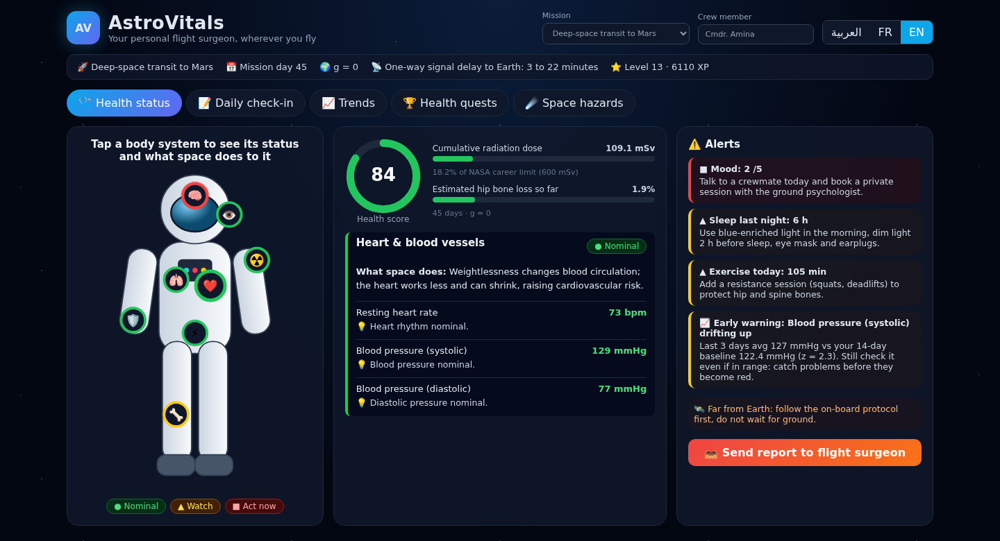
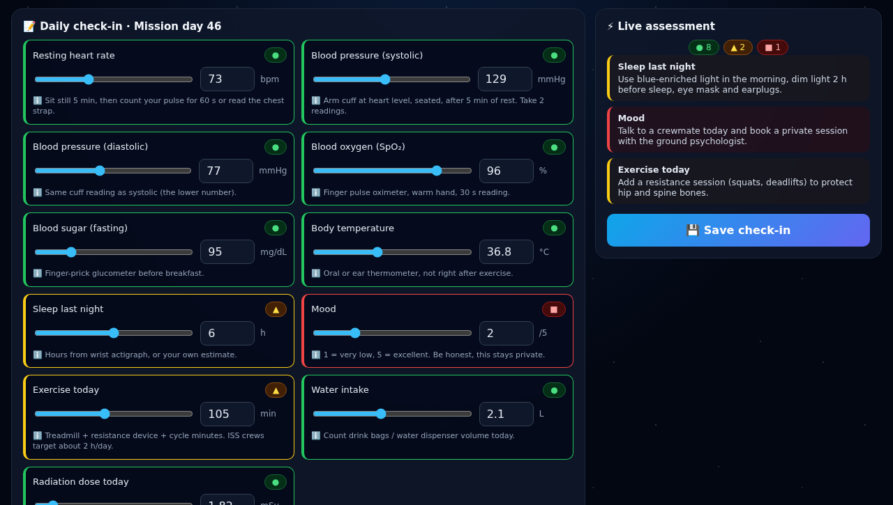
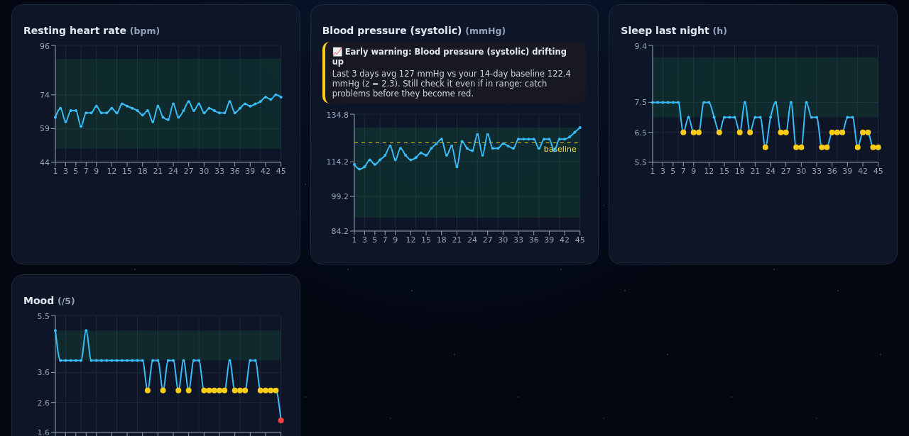
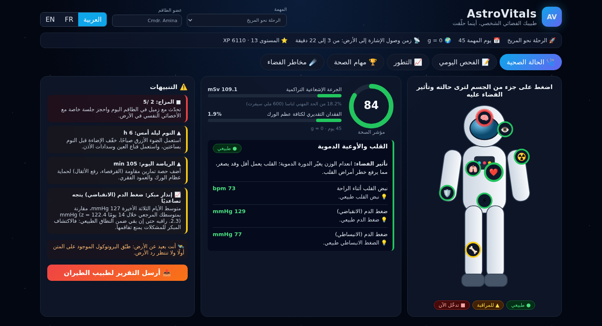

| Mission | Gravity | Radiation / day | Signal delay | Impact in the app |
|---|---|---|---|---|
| Space Station (LEO) | 0 g | 0.5 mSv | < 1 s | Full bone-loss rate, ground support |
| Artemis Moon base | 0.17 g | 1.37 mSv | 1.3 s | Reduced bone loss, higher dose |
| Mars transit | 0 g | 1.8 mSv | 3–22 min | Highest dose, crew autonomy |
| Mars surface | 0.38 g | 0.64 mSv | 3–22 min | Partial gravity, crew autonomy |
